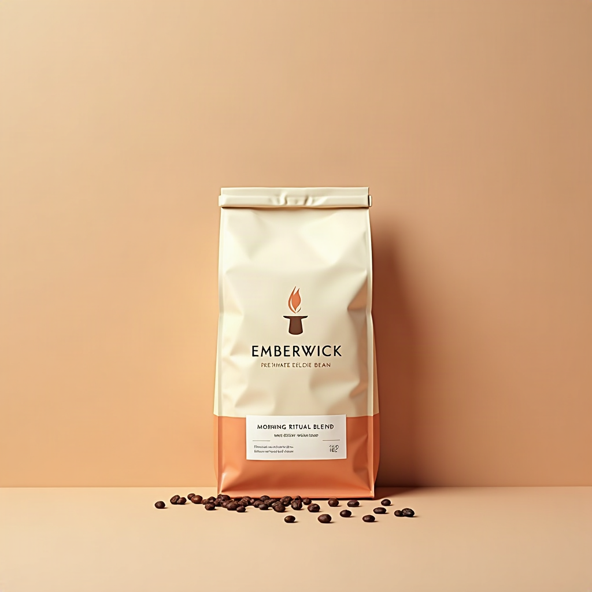

Morning Ritual Blend is Emberwick’s signature slow-roast: single-origin beans from Huila, Colombia, roasted in small batches over a longer, gentler curve to coax out deep chocolate and toasted hazelnut notes. Direct-trade sourced, roast-date stamped, and packed in a compostable bag — made for the mornings you refuse to rush.